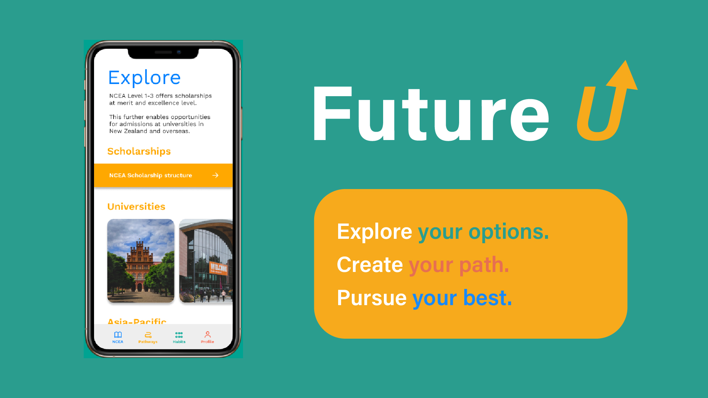

biography
Hello! My name is Chloe Chooi and I will be graduating with a Graduate Diploma in Interface Design. As a previous Bachelor of Arts Graduate in Linguistics, I come to design with an understanding of culture and research. To create meaningful impact through functional design is an aspiration I find exciting and fulfilling. The University of Waikato has been a great place to learn, collaborate and express my creativity through design projects.
I enrolled in the Graduate Diploma with the intention of pursuing UX Design as a career. Although initially I had hopes of becoming a Foreign English Language Teacher, I discovered a passion for creative and critical thinking through many group projects in my Linguistics degree. I imagined that this passion was unlikely to play out in a primary classroom, so I came back to pursue Interface Design as opposed to a teaching qualification. During this year, I have learnt and applied the principles of design to interface-based projects. I am also grateful to work with amazing, talented design students and explore other streams of design.
project description
According to the 2019 NZQA report, students gaining University Entrance (UE) has been stagnating around
50% for the last decade (2010-2019). Although this project was initially based on the problem of early
high school leavers and the negative consequences that follow, I believe that there are many factors
contributing to students not pursuing higher education.
As it would be unfair to see the lack of pursuit in higher education as a problem, Future U stems from
the lens of opportunity rather than being a solution to a problem. Future U is a mobile application that
seeks to emphasise opportunities higher education can bring and encourage NCEA-attaining students to be
more future-oriented.
This platform is targeted towards students entering their NCEA or senior high school years. Through
Future U, students can have more choice over their NCEA subjects by seeing options offered by
correspondence outside of their local school. Students can explore NCEA scholarships and potentially
other scholarships from universities both in New Zealand and overseas. Students can interact with the
platform by setting goals, tracking habits and personal NCEA progress. They can also support friends in
their goals and habits on the app.
I believe providing easier access for students to explore education opportunities can encourage
purposeful learning and future career journeys.
Future U – Emphasising opportunities within higher education at NCEA level

For more information contact us
Email: degreeshow@waikato.ac.nz
Faculty phone: 0800 924 528
Faculty information: cs.waikato.ac.nz